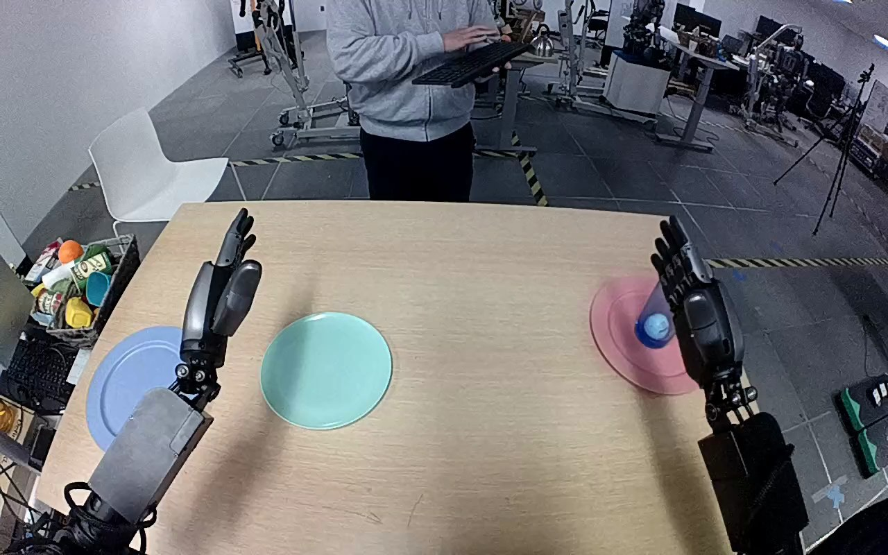

NVIDIA GR1 · 42
Video 42

Visual review action_review.json
{
"prompt_protocol": "humanoid_action_v1",
"prompt_provenance": "visually_authored_from_video_and_initial_frame",
"reviewed_contact_sheets": [
"sheet_001.jpg"
],
"inspected_frame_stride": 2,
"inspected_sampled_frame_count": 60,
"initial_scene": "Robot-view tabletop with open articulated hands and forearms extending forward from the lower corners. A translucent blue tumbler stands on the pink plate at the right. An empty pale blue-green plate is nearer the center-left; a separate lavender-blue plate lies farther left. A person beyond the table holds a keyboard without participating in the manipulation.",
"observed_sequence": [
{
"start_frame": 0,
"end_frame": 47,
"action": "The right hand opens and adjusts its pose above and beside the blue tumbler on the pink plate. The left hand remains open, making a small pose adjustment without touching any object.",
"confidence": "high"
},
{
"start_frame": 48,
"end_frame": 68,
"action": "The right hand moves around the tumbler and closes its thumb and fingers against opposite sides while the base remains over the pink plate.",
"confidence": "high"
},
{
"start_frame": 69,
"end_frame": 97,
"action": "The right hand lifts the upright tumbler clear of the pink plate and transports it leftward across the table toward the central pale blue-green plate. The left hand does not assist.",
"confidence": "high"
},
{
"start_frame": 98,
"end_frame": 112,
"action": "The right hand lowers the tumbler upright onto the central pale blue-green plate while maintaining its grasp.",
"confidence": "high"
},
{
"start_frame": 113,
"end_frame": 119,
"action": "The tumbler remains upright on the plate while the right fingers open. The right hand remains alongside the tumbler rather than withdrawing clear.",
"confidence": "high"
}
],
"arm_hand_roles": {
"right": "Sole manipulating hand: grasps, lifts, transports and lowers the blue tumbler, then opens its fingers beside the placed tumbler.",
"left": "Open and inactive in the transfer; slight pose motion without object contact, stabilization or hand-to-hand transfer.",
"coordination": "Single-hand manipulation. No two-hand coordination or person interaction occurs."
},
"anatomical_side_evidence": {
"assessment": "The forward-facing robot camera looks along both forearms extending from the lower corners. The active forearm enters from the robot right side; its thumb is on the medial side facing the opposite hand. The opposite forearm and medial thumb establish the left hand. This paired forearm and thumb orientation establishes robot-relative handedness rather than relying on image position alone.",
"confidence": "high",
"limitations": "Shoulder attachments and torso are outside the camera view."
},
"terminal_state": "Blue tumbler upright on the central pale blue-green plate; pink plate empty. Right fingers visibly opening around the tumbler, with the hand still immediately beside it. Left hand remains open and clear of the tumbler.",
"uncertainties": [
"Exact remaining fingertip contact at the terminal frame is partly obscured by the tumbler and hand. Finger opening is visible, but complete hand withdrawal is not shown.",
"The central destination plate appears pale blue-green in the footage. The original annotation calls it light blue; the separate farther-left lavender-blue plate is not used."
],
"annotation_discrepancies": [],
"evidence_frame_indices": [
0,
62,
78,
100,
110,
116,
119
],
"selected_execution_status": "success",
"execution_status_basis": "The intended blue tumbler is transported from the pink plate and visibly set upright on the central destination plate. Terminal opening is observed; the prompt does not claim withdrawal or complete separation.",
"video_id": "42",
"dataset": "NVIDIA_GR1_100",
"dedicated_review_agent": "review_gr1_42",
"review_source_video": "NVIDIA_GR1_100/42/original/original.mp4",
"source_frame_count": 120,
"source_fps": 20.0,
"native_detail_frames": [
0,
62,
78,
100,
110,
116,
119
],
"world_model_prompt": "The robot closes its right hand around the blue tumbler on the pink plate, lifts it clear, and carries it across to the central pale blue-green plate. It lowers the tumbler upright onto the plate and opens its fingers, ending with the tumbler standing on the plate and its right hand still beside it. Keep the camera fixed; preserve robot geometry, physically valid joint motion, and normal gripper opening and closing.",
"original_task_instruction": "Use the right hand to pick up blue glass from pink plate to light blue plate.",
"selected_segment": {
"start_frame": 0,
"end_frame_exclusive": 120,
"reason": "Complete original single-task reference; no cropping or trimming requested."
},
"source_video_sha256": "35e4ffa35fc5e1a2c222695969ce75465490c464ae46a00b99c3264714d5cc86",
"review_completed_at": "2026-10-13T18:06:03.518502+00:00"
}